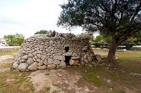

Està formada per dues navetes d'enterrament de planta circular que és van utilitzar cap a l’any 1400 a. C., =======
Està formada per dues navetes d'enterrament de planta circular que és van utilitzar cap a l'any 1400 a. C., >>>>>>> 8f4f1a8bb42c97e8ab6b6338dd35a0cf34a82505 anteriors als navetes de planta allargada com la naveta donis Tudons i els navetes de Rafal Rubí. La naveta occidental és va construir sobre la roca mare i disposa d'una sola cambra, de planta ovalada, a la qual s'accedia per una llosa perforada. Al seu interior és van trobar diverses lloses caigudes. La naveta oriental, també de cambra ovalada, te el parament del vessant sud cobert amb pedra seca, afegida en època moderna.
Editat per darrera vegada el